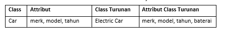

Inheritence atau pewarisan merupakan salah satu konsep dasar dalam
Pemrograman Berorientasi Object (PBO).
Dalam inheritence sebuah class atau objek dapat mewariskan sifat dan
perilaku kepada class yang menjadi turunannya.
Class yang menjadi pemberi waris disebut dengan class induk atau class
basis sedangkan class yang menjadi ahli waris dinamakan dengan class
turunan.
Class turunan dapat mewarisi semua atribut dan method dari class
induknya, dan juga bisa menambah atribut dan method baru.
Tipe data python merupakan komponen yang berfugsi untuk memberikan
keterangan data yang diproses dalam bahasa python.
Sedangkan class induk belum tentu memiliki semua atribut dan method dari
class turunannya.
Konsep Inheritaence(Pewarisan) itu seperti apa?
Untuk mempermudah memahami konsep tentang inheritence, kita dapat
mengambil studi kasus dari sebuah mobil. Sebagai contoh, mobil elektrik
merupakan salah satu tipe mobil yang spesifik. Sehingga kita dapat
membuat class mobil elektrik turunan dari sebuah class mobil.

Artikel ini berdasarkan modul algoritma. Pelajari selengkapnya di bawah
ini.